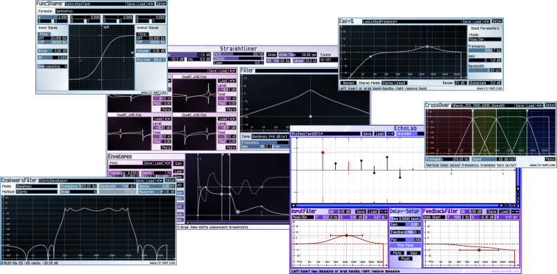

|  |
FreebiesOn this page, you will find a range of plugins that are offered as freeware. In the development of these freebies, the same high quality standards as for the commercial products apply - the only difference between free and commercial products is the complexity of the feature set. |
ProductsRS-MET currently offers two commercial products: the subtractive virtual synthesizer 'Straightliner' and the sophisticated delay plugin 'EchoLab'. To purchase a product, you just buy a keyfile via PayPal and put it into the same directory where the plugin resides. The next time the plugin is loaded, it will recognize the keyfile and switch from demo-mode into unrestricted mode. |
TutorialsThis page contains tutorials on various audio effects and sound synthesis techniques and how to use them. Although some of these tutorials may contain references to RS-MET products, they are written in a way so as to be generally applicable and useful. |
Welcome to Robin Schmidt's Music Engineering Tools. On this site, you will find high-precision software tools for sound-synthesis, and music production. The software comes in the form of plugins for the VST interface (VST is a trademark of Steinberg Media Technologies GmbH) on the MS Windows platform. RS-MET aims to satisfy the musician's desire for good sounding instruments and effects with intuitive access to musically relevant parameters as well as the audio engineer's (additional) desire for precise control and accurate visual presentation.
News
24. Dec. 2017: ToolChain released (merry christmas!)
27. Jul. 2011: FuncShaper updated
04. Apr. 2011: EngineersFilter and EasyQ updated
23. Dec. 2010: EngineersFilter released as christmas gift
31. Jul. 2010: EasyQ updated to version 10.07
30. Apr. 2010: Minor update for CrossOver - denormal issue fixed
DISCLAIMER OF WARRANTY
SOFTWARE DOWNLOADED FROM THE RS-MET WEBSITE IS PROVIDED 'AS IS'. RS-MET MAKES NO WARRANTIES, EXPRESS OR IMPLIED, THAT THE SOFTWARE IS FREE OF ERRORS OR THAT IT MEETS THE USER'S REQUIREMENTS FOR ANY PARTICULAR PURPOSE. UNDER NO CIRCUMSTANCES SHALL RS-MET BE LIABLE FOR ANY DAMAGES THAT RESULT FROM THE USE OF OR THE INABILITY TO USE RS-MET SOFTWARE - USE THIS SOFTWARE ON YOUR OWN RISK.